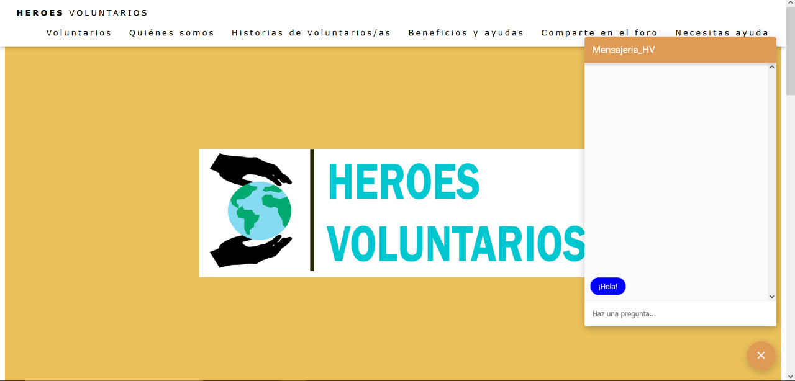
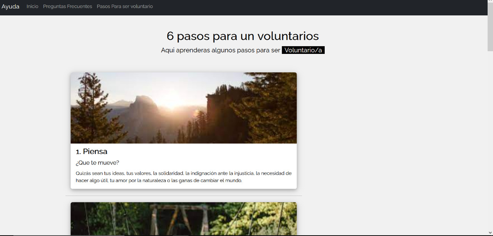
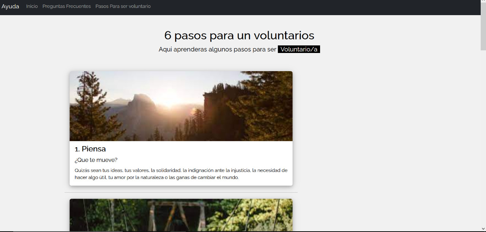

Volunteer Heroes
 

Web application developed with technologies, such as node.js, composer, designed in Laravel, has the registration and entry functionalities of companies and volunteers, real-time chat to be able to make inquiries.
- Objective:
- Description of the work process:
- Role and responsibilities: My role was backend programmer and responsibilities It was making the stories of users assigned to me for project.
- Used programming languages: javascript and php.